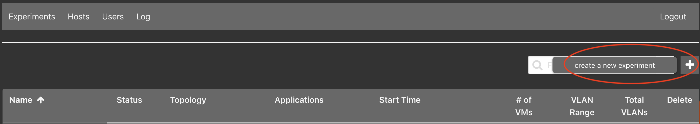
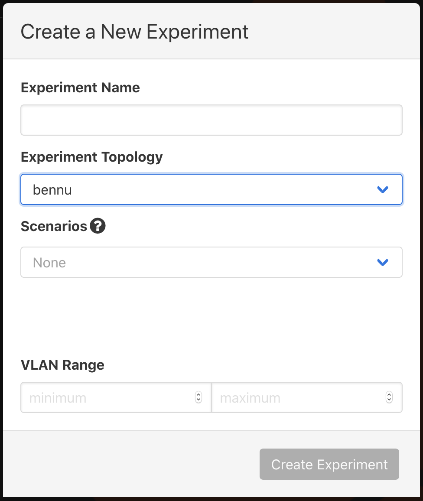
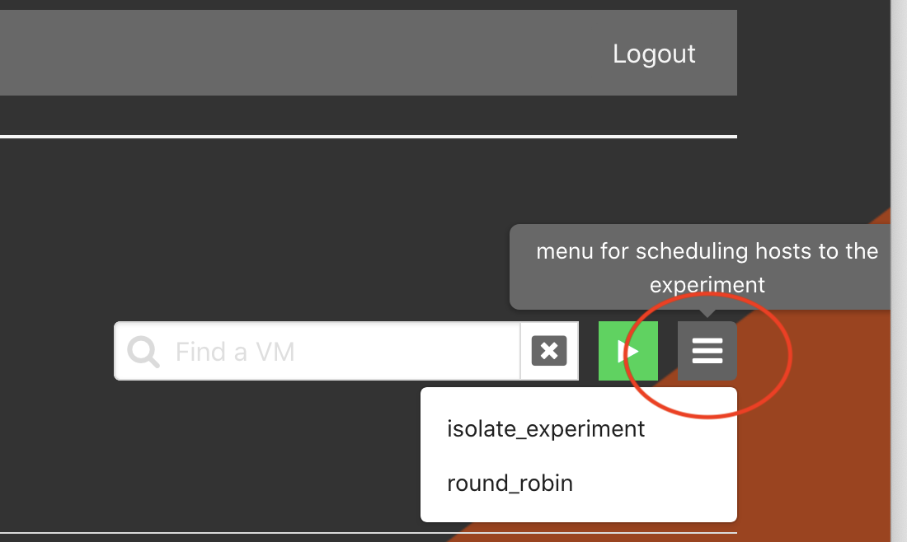

Experiments¶
Listing Experiments¶
From the Web-UI¶
Click on the Experiments tab. This will display all available experiments that
the user has access to view or edit.
From the Command Line Binary¶
This will display a list of all available experiments: it is run as a root
user.
$> phenix exp list
Starting / Stopping Experiments¶
From the Web-UI¶
Clicking the stopped button will start the experiment; similarly the started
button will stop the experiment. A progress bar is used to update the progress
of starting an experiment. During the update to the experiment -- starting or
stopping -- it will not be accessible or available to delete.
From the Command Line Binary¶
$> phenix exp start <experiment name>
Or ...
$> phenix exp stop <experiment name>
Or ...
$> phenix exp restart <experiment name>
Optionally, you can use the --dry-run flag to do everything except call out to
minimega.
The phenix exp --help command will output:
Experiment management
Usage:
phenix experiment [flags]
phenix experiment [command]
Aliases:
experiment, exp
Available Commands:
apps List of available apps to assign an experiment
create Create an experiment
delete Delete an experiment
list Display a table of available experiments
restart Start an experiment
schedule Schedule an experiment
schedulers List of available schedulers to assign an experiment
start Start an experiment
stop Stop an experiment
Flags:
-h, --help help for experiment
Global Flags:
--base-dir.minimega string base minimega directory (default "/tmp/minimega")
--base-dir.phenix string base phenix directory (default "/phenix")
--hostname-suffixes string hostname suffixes to strip
--log.error-file string log fatal errors to file (default "/root/.phenix.err")
--log.error-stderr log fatal errors to STDERR
--store.endpoint string endpoint for storage service (default "bolt:///root/.phenix.bdb")
Use "phenix experiment [command] --help" for more information about a command.
Create a New Experiment¶
From the Web-UI¶

Click the + button to the right of the filter field.

Enter Experiment Name and Experiment Topology, the remaining selection are
optional. In this example, bennu is an example topology and is not included
by default. You will need to create your own topology(ies).
From the Command Line Binary¶
Three options are available from the command line. The only requirements are for an experiment and topology name; scenario and base directory are optional.
$> phenix experiment create <experiment name> -t <topology name>
$> phenix experiment create <experiment name> -t <topology name> -s <scenario name>
$> phenix experiment create <experiment name> -t <topology name> -s <scenario name> -d </path/to/dir/>`
The phenix exp create --help command will output:
Create an experiment
Used to create an experiment from an existing configuration; can be a
topology, or topology and scenario. (Optional are the arguments for scenario
or base directory.)
Usage:
phenix experiment create <experiment name> [flags]
Examples:
phenix experiment create <experiment name> -t <topology name>
phenix experiment create <experiment name> -t <topology name> -s <scenario name>
phenix experiment create <experiment name> -t <topology name> -s <scenario name> -d </path/to/dir/>
Flags:
-d, --base-dir string Base directory to use for experiment (optional)
-h, --help help for create
-s, --scenario string Name of an existing scenario to use (optional)
-t, --topology string Name of an existing topology to use
Global Flags:
--base-dir.minimega string base minimega directory (default "/tmp/minimega")
--base-dir.phenix string base phenix directory (default "/phenix")
--hostname-suffixes string hostname suffixes to strip
--log.error-file string log fatal errors to file (default "/root/.phenix.err")
--log.error-stderr log fatal errors to STDERR
--store.endpoint string endpoint for storage service (default "bolt:///root/.phenix.bdb")
Scheduling an Experiment¶
From Web-UI¶
The experiment must be stopped; click on the experiment name to enter the Stopped Experiment component. Click on the hamburger menu to the right of the filter field and start button to select a desired schedule.

From the Command Line Binary¶
The list of available schedules can be found by running the folowing command.
$> phenix exp schedulers
Then apply the desired schedule with the following command.
$> phenix experiment schedule <experiment name> <algorithm>